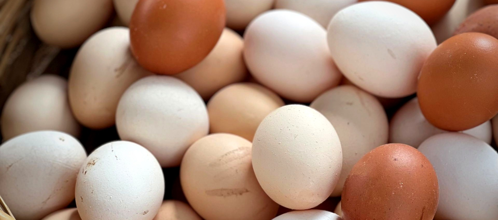

Карточка фермы «Раменье» v2 — вместо скриншота сайта теперь реальное фото домашних яиц (тот же паттерн, что уже используют другие карточки категории "Сайты" — клининг/кинезиолог/кофейня: тематическое фото, а не скриншот).

Сайты
Сайт фермы «Раменье»
Лендинг для продажи домашних яиц и птицы с доставкой
Фото: pexels.com/photo/20877229 (бесплатная лицензия) — крупный план корзины свежих домашних яиц разных оттенков. Обработка: контраст +8%, насыщенность +12%, лёгкая виньетка. Статичное фото, без анимации (для этой карточки не просили).